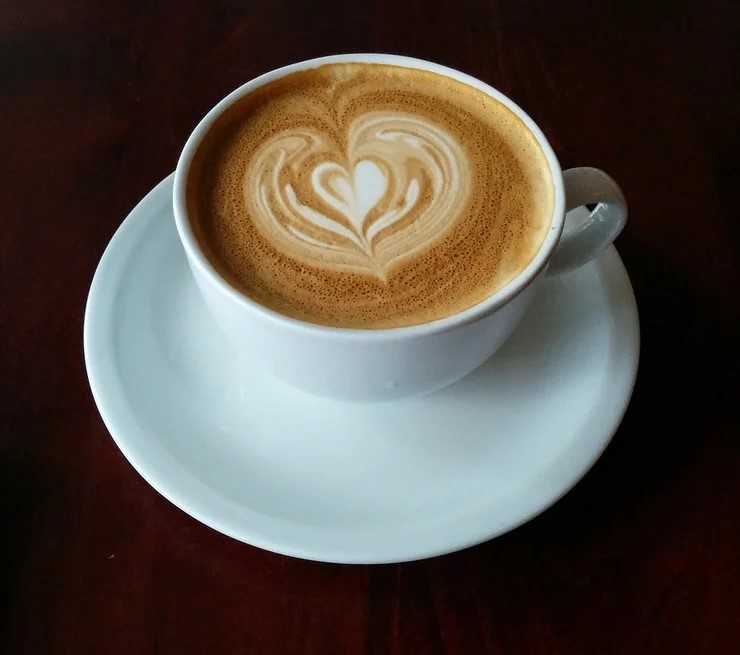

Welcome to Morning Brew - where every morning holds the promise of a perfect start. As the sun rises and the city awakens, we invite you to join us on a journey of flavors and aromas that ignite the senses. Step into our cozy café and let the rich scent of freshly brewed coffee envelop you, transporting you to a world where time slows down and moments are savored.
From the moment you walk through our doors, you'll be greeted by the inviting aroma of premium coffee beans and the warm smiles of our friendly baristas. Whether you're a seasoned coffee connoisseur or just starting your caffeine journey, our menu boasts a tantalizing array of handcrafted beverages to suit every taste and preference.
Take a seat in our comfortable lounge area, where plush armchairs and rustic décor create the perfect ambiance for relaxation and conversation. Catch up with friends over steaming cups of espresso or indulge in a moment of solitude with a frothy latte and a freshly baked pastry. At Morning Brew, every visit is an opportunity to recharge, reconnect, and rediscover the simple pleasures of life.